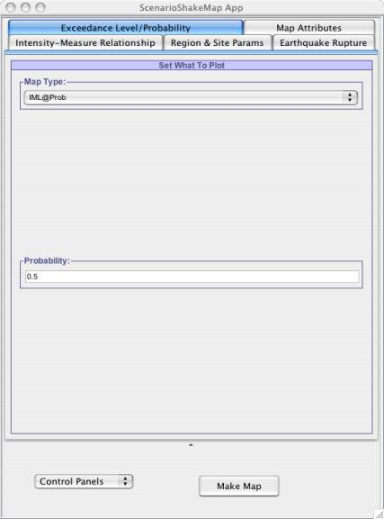

This panel becomes visible when user clicks on the Exceedance Level/Probability tab in the application. This provides the user with option of generating Scenario Shakemaps for either of following:
1) IML@Prob: It will generate shakemap for Intensity Measure Level for selected region which will be exceeding the probability of 50% if this earthquake rupture occurs, as shown in Fig -1.
2) Prob@IML: It will generate probability scenario shakemap after finding the probability of each site in the region that will exceed the given intensity measure level, as shown in Fig - 2.
|  |
| Fig - 1: Choosing to generate Scenario Shakemap for Intensity Measure Level that exceeds the probability of 50%. |
| Fig - 2: Choosing to plot probabilistic Scenario Shakemap for what probability the intensity measure level will exceed 7. |